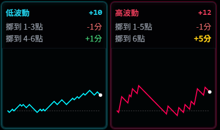
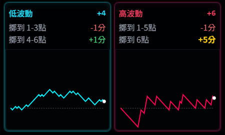

最近有位企劃新人想對「數值遊戲的波動率」有更進一步的理解。
之前他在數值會議上聽過波動、低中高標等術語，但具體是什麼感覺，他其實不太理解。
對企劃而言，不需要真的硬去理解數值邏輯推理，
最需要理解的是波動具體綜合體感。解釋再多理論，不如直接讓他看見。
所以我用 AI 寫了一個「機率波動體驗小工具」，直接丟給他感受一下。
畫面左邊是低波動（藍線），右邊是高波動（紅線）。
模擬個三五次後，他開心地說：「高波動看起來好好玩喔，起伏好大！」
起伏很大很好玩？
起伏很大很好玩？在不押分的時候確實是啦！
沒設定本金跟籌碼壓力時，波動稍大一定看起來比較刺激呀！
在沒押分或小押分時，看著紅線向下深潛，不痛不癢；
隨後觸底反彈直衝天際，只感受到起飛的爽感。
雖然看著線圖也會產生多巴胺，
但少了本金跟籌碼的痛感、少了那種「想砸機台」的衝動，
光看那條線是感受不到有痛才有愛的遊戲真諦。
所以我對他說：「這麼好玩？那要不要模擬押分，體驗看看？」
籌碼深度的不同，視野瞬間不同
我拿出籌碼，先發給他 1000 面額。
「現在，開一次骰子花費 10 面額籌碼。按一次按鈕開 60 個結果，我要先從你手上收走 600 的籌碼。」

結果開出來後，他說：「有押籌碼感覺好不一樣……如果是高波動，我可能在第 15 次就決定收手了。」
接著我提高難度：
「這次，開一次骰子花費 100 面額籌碼。在開獎的路上，如果籌碼用完（分數到 -11），遊戲就提前結束囉。」

這次的結果很殘酷，前 11 場籌碼就花光了。 他慘叫：「太慘了，到第 5 手我就想放棄了！」
「籌碼深度」的衝擊直接，只看波動率曲線看不到
加上籌碼條件後，看待曲線的意義瞬間翻轉：
- 折線圖上的一個高波動的 V 型下墜：
- 無成本時：「沒事！蹲越低，跳越高！」
- 大成本時：「靠 X！機器是不是在針對我！！！」
- 折線圖上的平穩藍線：
- 無成本時：「好無聊，死魚一條。」
- 大成本時：「呼……這次有回本，收益單次押分的 15%，Nice！」

比起波動度，籌碼深度的刺激感會更加直接！
一次押 0.1 分的遊戲，波動再大也不痛不癢；
一次押 100 分的遊戲，波動再小都無法淡定！
這時候，新人問了一個直擊核心的問題：
「既然『籌碼深度』影響這麼大，那波動度對於遊戲企劃的意義到底是什麼？」
遊戲波動與設計策略
這個問題問得非常好。
籌碼深度，押大押小的選擇權其實在玩家手上。企劃設計不到。
波動度，則是透過企劃規則與機率設計出來的綜合結果，是遊戲的「體質」。也不是企畫說設計就能設計。
除了設計遊戲必需拿上市場驗證過的籌碼深度、波動度，來做為下一款遊戲設計基準的基本常識之外。
企劃的任務是根據這個遊戲波動「體質」，去設計對應的「體感外衣」。
1. 面對「高波動」遊戲
- 痛點：玩家會經歷漫長的吃分期，容易在還沒中獎前就絕望棄坑。
- 對策：販賣「希望 (Hope)」
必須在玩家蹲低的時候，不斷給他「蹲越低跳越高」的原動力。 - 設計重點： 強化聽牌感、不斷的「大小獎預告」、強調獎池（Jackpot）的累積金額、讓盤面演出常常與大獎產生連動。
- 經典風格： 就像日本的柏青哥（Pachinko/Pachislot），
可能會持續強調那些「前兆」，讓每一把 Spin 的時候，
都感覺盡量與 Jackpot 有連結。
2. 面對「低波動」遊戲的
- 痛點：如果玩家選擇押低分，一直在輸贏小錢之間徘徊，久了會想睡覺。
- 企劃對策：販賣「爽感 (Hype)」：
必須把微小的勝利，包裝成巨大的成就，並有意無意提醒玩家「可以押大一點」。 - 設計重點： 幫平淡的白開水加調味料。
贏 1.2 倍要做得像贏 2 倍一樣熱鬧； 贏 10 倍要炸得像贏 50 倍一樣輝煌。
在信心的驅使下，鼓勵玩家提高押注。
結論：別設計出「看線很爽，押分很痛」的遊戲
回到最根本，企劃理解波動率的目的：
- 利用波動率曲線與不同籌碼深度，來同理玩家的體驗。
- 再依照體驗給予不同波動的遊戲，不一樣的體感外衣：
- 高波動：就販賣希望 (Hope)
- 低波動：就營造爽感 (Hype)
或許哪天可能會有「打著高波動高倍數的招牌，實際玩起來卻是低波動體感」的遊戲。
但身為遊戲企劃，還是要親自用不同的籌碼深度來做一次體驗，才能給予遊戲最好的體感包裝策略。